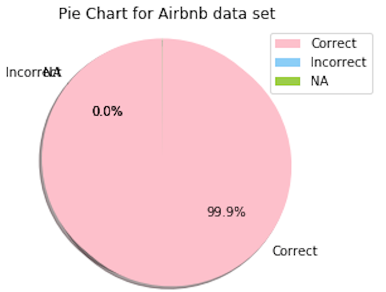

Weile Chen
Project Part 1
Data
Given that ‘NA’ and incorrect values in all datasets only account for a minor part, removing the rows that contain ‘NA’ and incorrect values will not negatively influence the final result for all three data sets. For example, in the Airbnb data set, there are more than 36,000 rows, but only 227 rows contain ‘NA’ values and 16 rows contain incorrect values. The results is shown in the following figure.
One of the main issue of the Airbnb dataset is noise. There are many irrelevant information such as a description that a host puts on the page, review contents. There are also duplicated information such as market, neighborhood, host neighborhood, smart location, street, which contains very similar - sometimes the same contents.
There are also wrong listings in the scraped data such as the listing city is New York but he zip code is in California. We call this directly scraped data metadata, and in order to perform better evaluation of the data, we will do a clean for the metadata. The clean for metadata consists of dropping irrelevant text contents, and exclude the error contents such as zip codes outside New York City.
The hotel dataset is relatively simple compare to the Airbnb dataset. It only contains hotel names, zip codes, prices, addresses, country names, region and rating. For the planned analysis we need only the zip codes and hotel prices.
For Yelp data, the raw data is collecting all restaurant information base on a zip code. So, each zip code will have hundreds associated restaurants. Next step of cleaning will be grouping related data together. After counting the amount of high quality restaurants, this attribute will be assigned to corresponding Airbnb house base on the zipcode.
Also, measuring restaurant quality based only on rating also has its limitation. Scale of rating is from 1 to 5, it’s obvious not the most accurate measurement. Therefore, other influence factors, such as number of reviews or price range, might need to be considered to determine the quality of restaurants.
During the data cleaning process, as we mainly have numerical, boolean, and categorical data, we build a well-organized function to detect the incorrect value and ‘null’ value based on above three types of data to analyze three different datasets.
Our function, named Score_Cleanliness, will detect the ‘null’ value for each variable and check incorrect value based on different types of data, finally, it will calculate a final score. Our function will check below missing and incorrect values:
Counting and Reporting all NULL for our data.
Detecting Non-integer values for a Numerical Variable: Some variables will only have integer values, the function will detect those non-integer values. e.g., the variable, “accommodates”, could not have a value like 2.3.
Finding Non-positive values for a Numerical Variable: Some variables will only have negative values, the function will detect the negative values. e.g., the variable, “beds”, could not have a value like -3.
Searching Incorrect values for a Boolean Variable: After changing all uppercase of a string-type boolean variable into lowercase, the function will catch those values is not: “t”, “f”, “true”, “false”, “1”, or “0”.
The rest of part of data cleaning is combined with basic statistical analysis part.